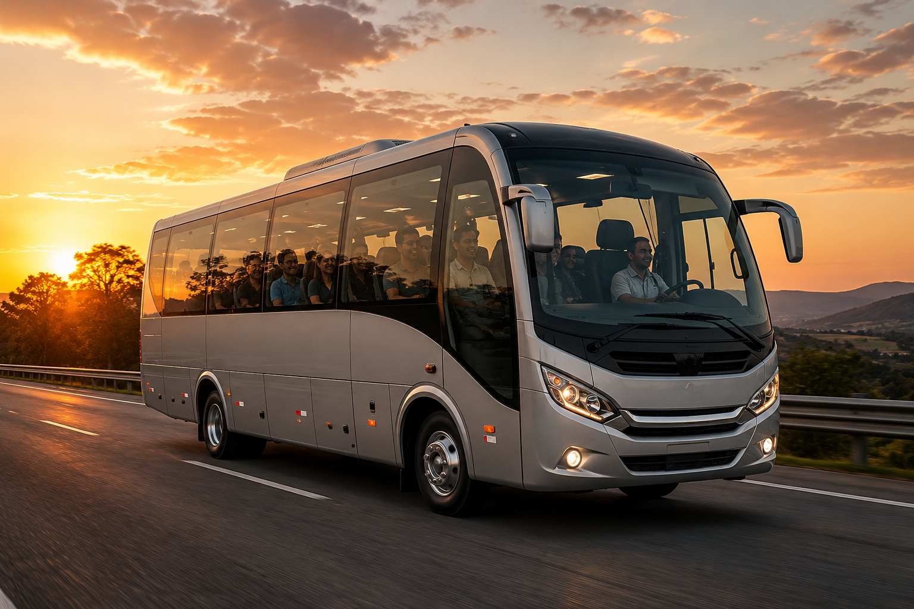

Preencha sua solicitação
Informe origem, destino, data, horários, passageiros e detalhes da viagem.
PLATAFORMA DE FRETAMENTO
Ônibus, micro-ônibus e vans com motorista para sua viagem, em uma única solicitação.
A Fretall conecta você a empresas especializadas no fretamento de passageiros. Você informa sua necessidade, nós buscamos opções para comparar e acompanhamos o processo até o embarque.
SIMPLES DO INÍCIO AO FIM
Informe origem, destino, data, horários, passageiros e detalhes da viagem.
Buscamos empresas de fretamento em transporte de passageiros compatíveis com sua necessidade e região.
As opções chegam por e-mail ou WhatsApp para você analisar.
Escolha a melhor opção e a Fretall acompanha os próximos passos.
ECONOMIZE TEMPO E TENHA MAIS OPÇÕES
Chega de perder tempo procurando e solicitando orçamento empresa por empresa. Com uma única solicitação, a Fretall busca opções entre empresas de fretamento em transporte de passageiros para você comparar e escolher a que melhor atende sua viagem.
Você informa o que precisa uma única vez. A Fretall faz a busca por você.
Conheça alternativas de empresas de fretamento em transporte de passageiros e escolha a opção que fizer mais sentido para sua viagem.
Acompanhamos sua solicitação, ajudamos na comparação e seguimos com você até o embarque.
Você informa o que precisa. A Fretall busca as opções para você.
FRETAMENTO PARA QUEM PRECISA VIAJAR
Uma única solicitação para encontrar empresas de fretamento em transporte de passageiros compatíveis com a sua viagem — sem precisar cotar uma por uma.
Transporte para equipes, convenções, treinamentos e eventos. Você organiza o compromisso; nós facilitamos a busca.
Retiros, congressos, encontros e excursões com opções adequadas ao tamanho e à necessidade do grupo.
Transporte para convidados entre hotéis, cerimônias, recepções e retorno, com mais comodidade para todos.
Aeroportos, hotéis, eventos e outros deslocamentos planejados de acordo com sua necessidade.
Seu grupo escolhe o destino. A Fretall busca opções de transporte para a viagem.
Família, amigos, passeios e viagens especiais sem perder tempo procurando fornecedor por fornecedor.
Futebol, vôlei, basquete, academias, campeonatos, torneios e delegações esportivas com opções para diferentes tamanhos de equipe.
Passeios, excursões, visitas pedagógicas, eventos escolares e deslocamentos de alunos e equipes.
Congressos, visitas técnicas, viagens acadêmicas, eventos e deslocamentos de estudantes e professores.
Um único ponto de contato para buscar diferentes opções de transporte para clientes e eventos.
OPÇÕES PARA DIFERENTES NECESSIDADES
Conforto, capacidade e segurança para empresas, excursões, eventos e grupos maiores.

Conforto e praticidade para grupos de médio porte.

Agilidade para equipes, famílias, eventos e traslados.
COTAÇÃO
Informe o que você precisa e nós buscamos opções de transporte junto às empresas de fretamento em transporte de passageiros para você comparar e escolher.
SOBRE A FRETALL
A Fretall nasceu da experiência de mais de 15 anos no setor de transporte de passageiros, acompanhando de perto operações intermunicipais e interestaduais e entendendo as necessidades de quem precisa contratar transporte.
Ao longo dessa trajetória, vimos de perto os desafios de encontrar opções, solicitar orçamentos e escolher o veículo adequado para cada necessidade.
Você informa os dados da viagem. A Fretall busca opções de ônibus, micro-ônibus e vans, ajuda na comparação e oferece atendimento rápido e personalizado até o embarque.
Mais de 15 anos de experiência no setor. Agora, conectando essa experiência a uma maneira mais simples de contratar fretamento.
PARA EMPRESAS DE FRETAMENTO
Cadastre sua empresa para receber oportunidades compatíveis com sua região, frota e operação. A Fretall busca parceiros com documentação compatível com o tipo de serviço e a operação a ser realizada. Um responsável da Fretall entrará em contato.


Ônibus, micro-ônibus e vans para diferentes necessidades de viagem, com a Fretall ajudando na busca e acompanhando você até o embarque.
SOLICITAR COTAÇÃO